One place for everything a luxury travel agency knows.
Constantin Chopin · Founding product designer · 2025–2026
The problem
How travel advisors work today, why so much of it is done by hand, and where we chose to focus.
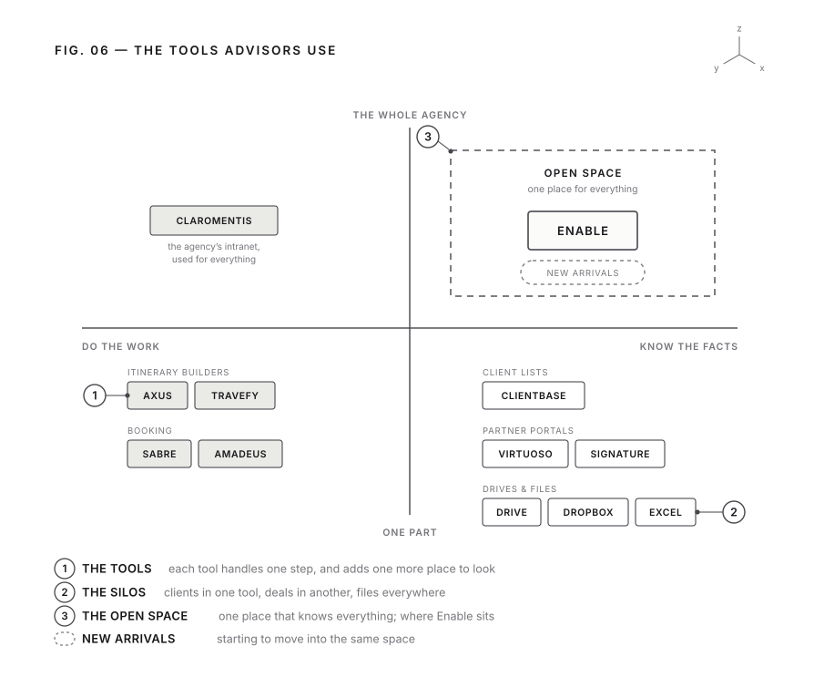
The problem
Travel advisors use many tools, and none of them talk to each other.
Some tools help them get work done, like itinerary builders and booking systems.
Other tools each hold one kind of information: clients, trips, files or hotel deals.
No tool brought it all together. So advisors did it by hand, for every trip.
This is what an advisor works with every day.
Their tools today
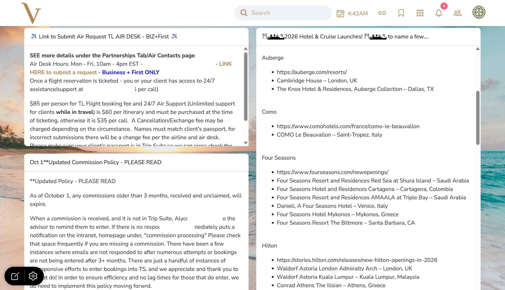
The agency intranet · a new hotel is announced
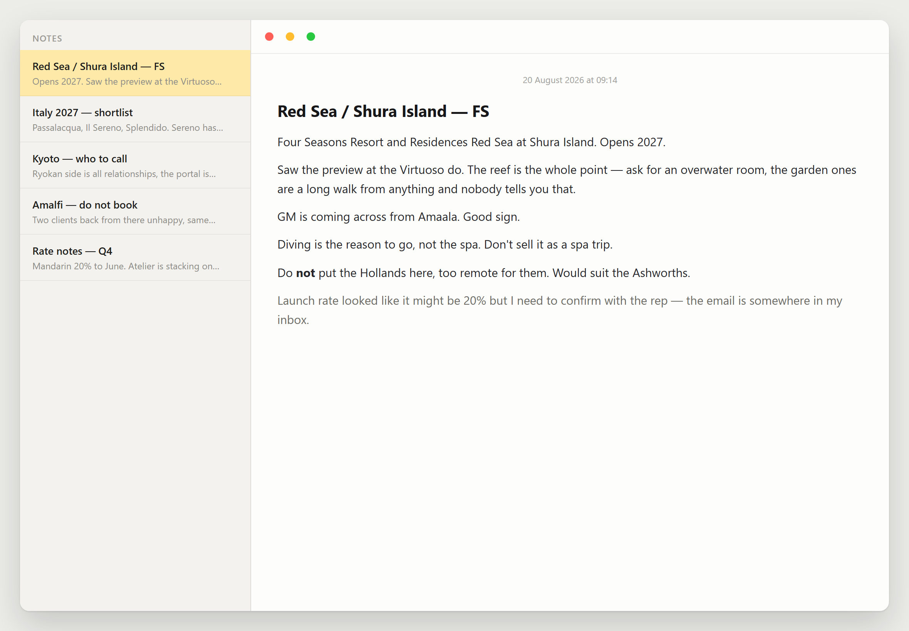
The advisor’s notes · what they really think
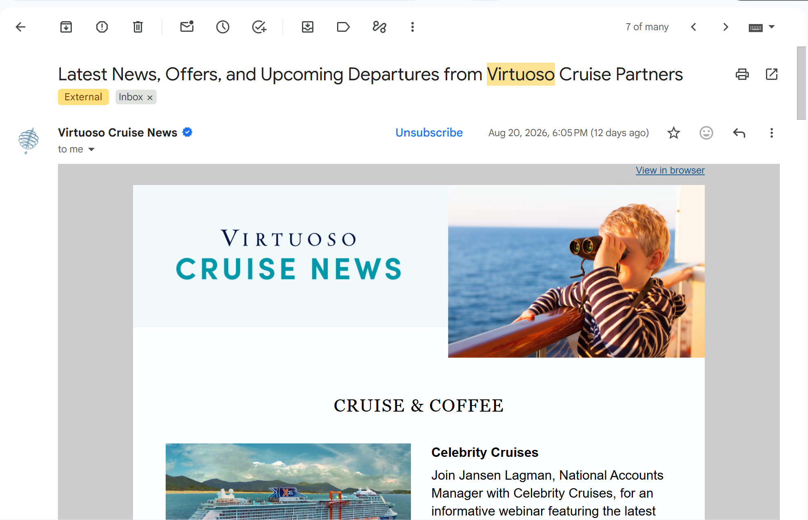
A partner email · the special offer
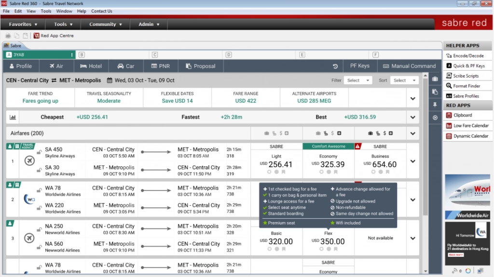
The booking system · where they book
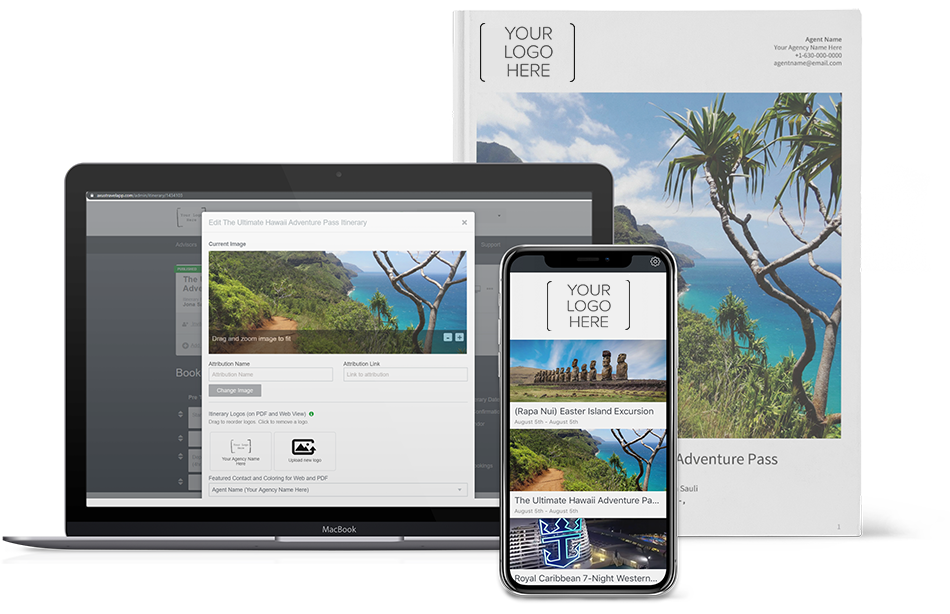
The itinerary builder · the trip proposal
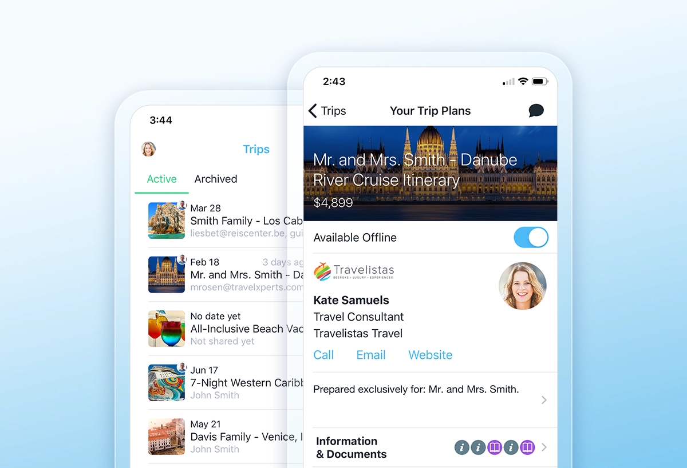
The client app · what the traveller sees
The top three are all about the same hotel. Each one holds a different piece of the story, and nothing connects them. The advisor has to connect them in their head.
A sale goes through eleven steps. We focused on the first five.
Where we focused
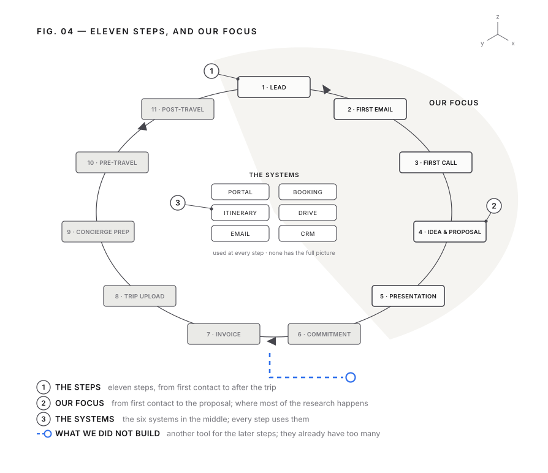
The eleven steps, and the five we focused on
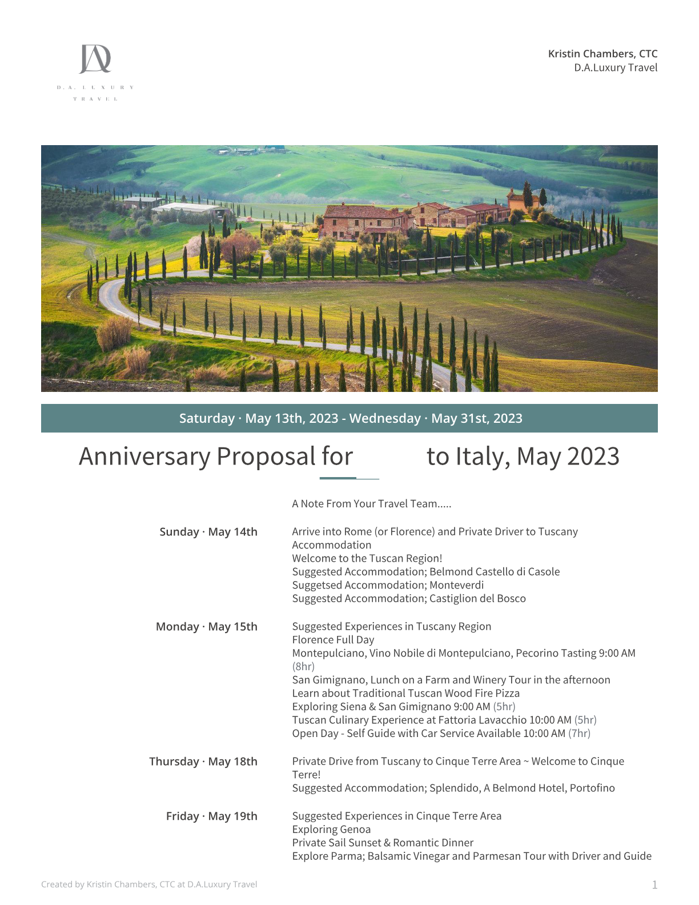
Step five · the proposal the client receives
~72hto put one proposal together by hand
3–5rounds of changes before it goes to the client
3 at oncethings to weigh for every hotel: the commission, the perks and the client’s taste
The third number is the hard part. For every hotel, the advisor has to remember what it pays, what it includes and whether the client will like it. None of this time is paid.
We designed Enable with a real travel agency.
Our design partner · every week for eight months
TravelLustre · the agency
Kristin Chambers, CTCFounder · CEOJanet FlaggCOOKristyn TerpinasAdvisor · on staff
Independent advisors · their own clients
Sarah L. ThompsonOwn agencyTara MisraOwn agency
+40advisors
And the rest of the deskThe lab
Three of them work for the agency. Two are independent: they bring their own clients and use the agency’s hotel deals. Their client list is their business, so it has to stay private.
What we built
One place that holds everything the agency knows, and the six screens that read from it.
We brought six systems into one place. Every screen reads from it.
What we built
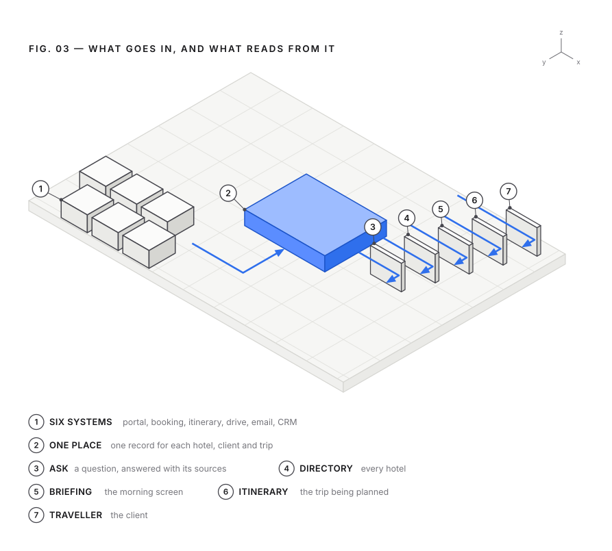
1 six systems · 2 one place · 3–7 the screens that read from it
4 the directory · one hotel record · live, you can scroll it
Enable reads PDFs, spreadsheets and emails, and turns them into one clear record for each hotel, client and trip. On the right is a real record from the directory.
The product · Ask
Ask only answers from what the agency knows.
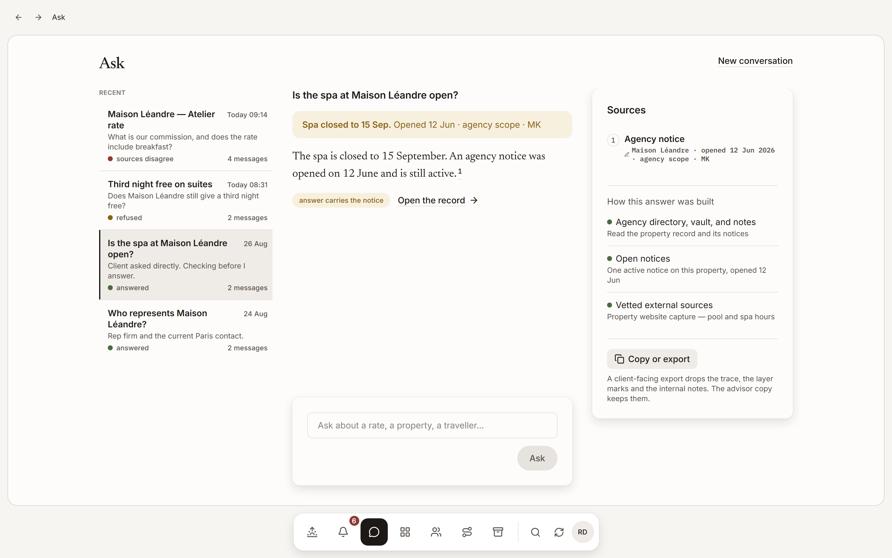
The problem
Advisors did not trust answers from the internet, and could not find what the agency already knew.
What I did
Ask only answers from the agency’s own records. Every answer shows its source and its date, and says “I don’t know” when it has nothing.
The product · The directory
A hotel’s commission and perks are grouped by partner programme.
The problem
For every hotel, advisors had to remember what it paid and what it included, and both change with each partner programme.
What I did
Each programme has its own section on the hotel’s record. You compare them at a glance, then open one to see its full terms.
The product · The briefing
The briefing tells one advisor what their day looks like.
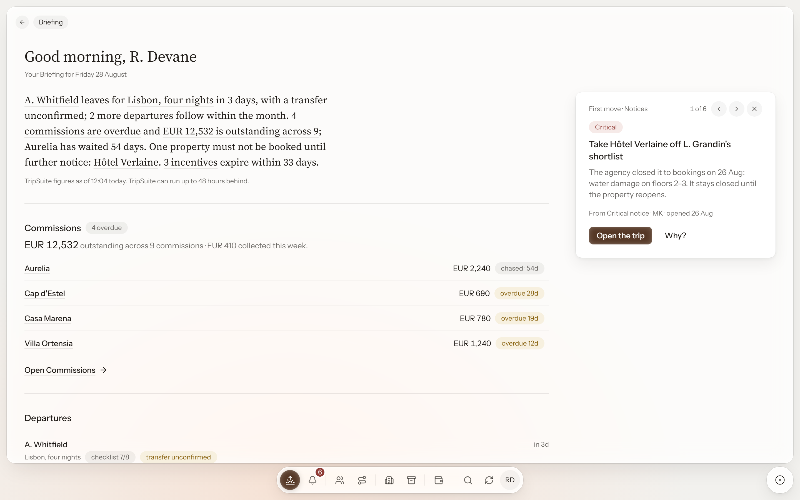
The problem
Advisors started each day not knowing what needed them first. The first version showed a grid of equal cards, with no order to read them in.
What I did
The briefing opens with a few sentences about their day, in order of what matters, then suggests the first thing to do.
The product · The itinerary
Every hotel on a trip shows what it pays and what the client gets.
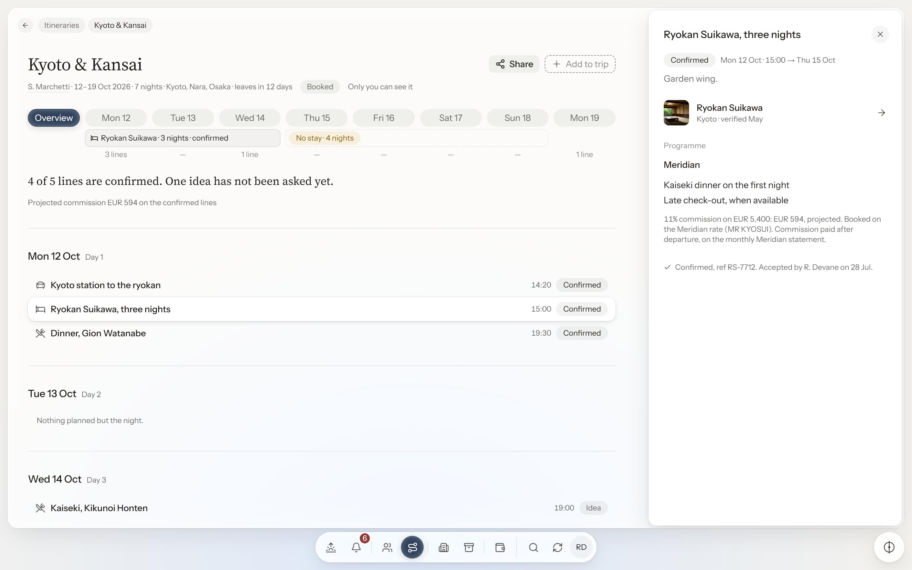
The problem
Advisors weighed the commission, the perks and the client’s taste in their head, for every hotel on every trip.
What I did
Each hotel on a trip brings its commission and perks with it. Enable warns when a hotel does not suit the client, and blocks hotels the agency has closed.
The product · The traveller
Every client preference shows where it came from.
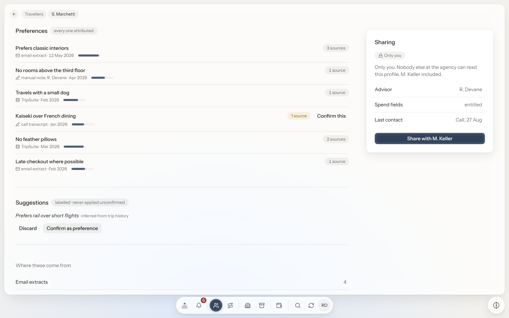
The problem
Client preferences lived in advisors’ heads and inboxes. And for an independent advisor, the client list is their business.
What I did
Every preference shows where it came from and when. Suggestions wait for a person to confirm them, and the profile stays private to its advisor.
The product · The knowledge vault
Every document comes in through one place.
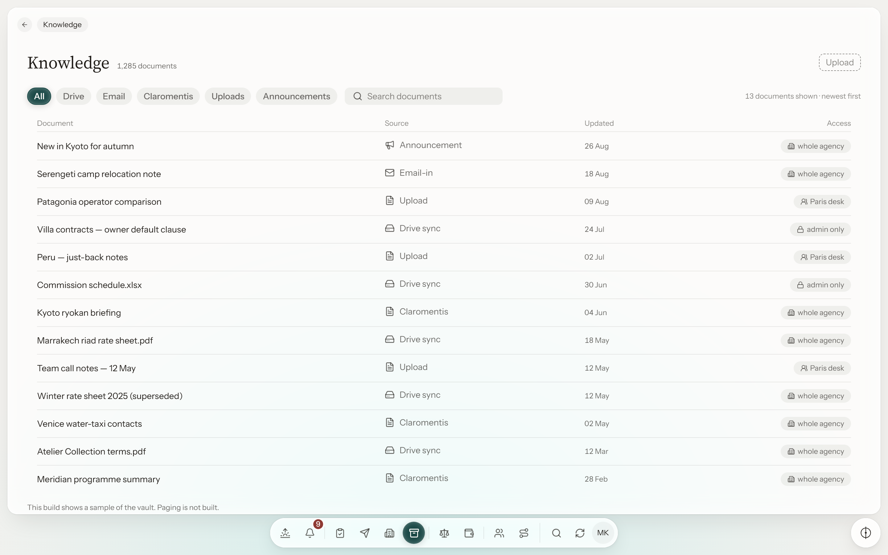
The problem
Rate sheets, emails and files were spread across many tools, and nobody knew which were current or who could see them.
What I did
Every document comes in through one place, with its source, its date and who can read it. Answers are built only from these documents.
How we got there
How we worked with advisors, the first version we built, what went wrong, and what I learned from it.
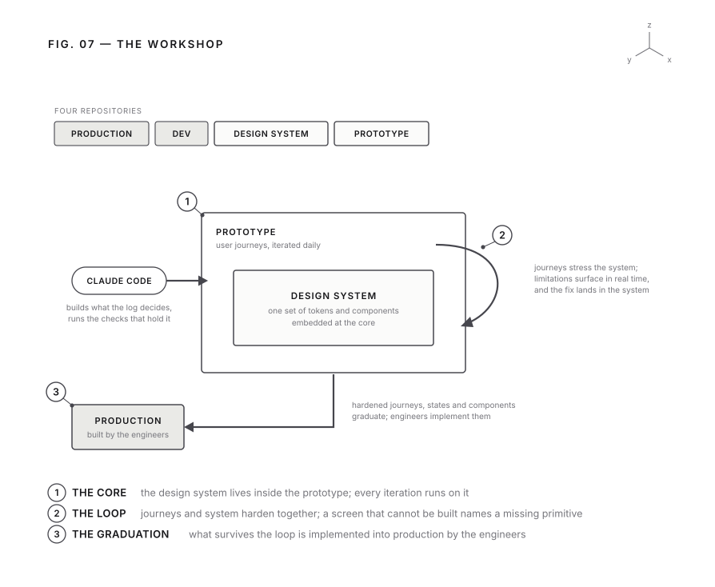
How we worked
Two calls a week with advisors. A new version every week.
Designing in Figma first was too slow for that pace. So the working prototype became the design, and advisors always had something new to try.
I made every design decision and wrote each one down: the problem, the evidence, and the option I turned down.
The code followed those decisions. Automatic checks made sure the rules held on every screen.
What we heard
Advisors kept telling us the same thing.
Do we have a place on the Internet where all these meet-and-greet services are listed?
Advisor · 21 May · the answer was no
There was nowhere to look. The answer lived in someone’s memory.
I had a Hawaii list that I took off the Internet… found out that this was pre-Covid. So a lot of those restaurants were closed already.
Advisor · 30 April
When they did search online, the answers were out of date.
I don’t want to rely on information it gives me because it’s just information from the Internet.
Advisor · 16 April
So a general AI assistant was never going to work for them.
Your data is at your fingertips instead of things being disjointed.
The agency lead · 23 April
The agency lead described what they needed: one place that holds what the agency already knows.
Four comments, one conclusion: they could not find what they already knew. So we built a place to find it.
The first build
A chat window over their documents, with results shown as cards.
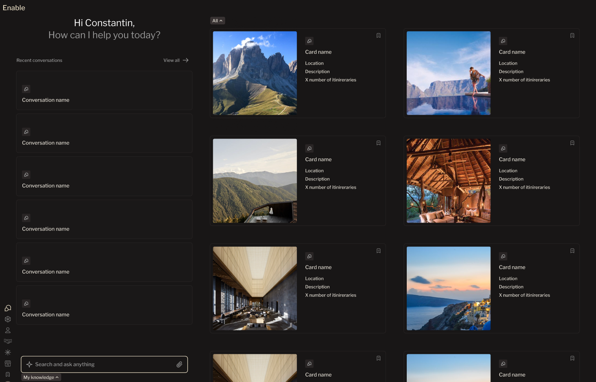
June 2025. It looked good in demos.
The first build · on mobile
At the same time, we tried the same idea as a mobile app.
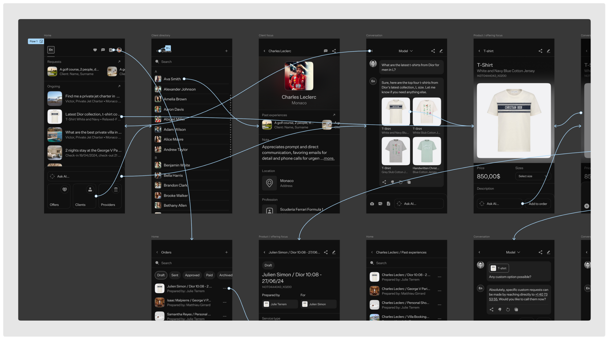
Every screen ended in a chat box. We were still designing a better way to ask, not a place to look.
The first build · sketches
Paper first, then grey boxes, then screens.
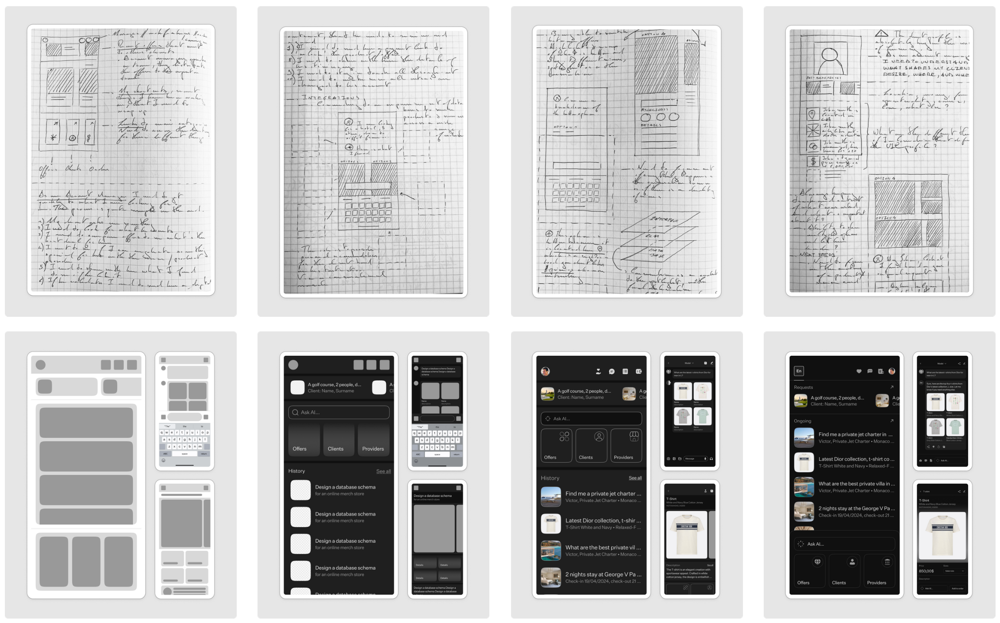
I started from the advisors’ own questions: what do I need to know about this client, and where would I find it? Those questions later shaped the data model.
What went wrong
The cards looked right, but there was nothing behind them.
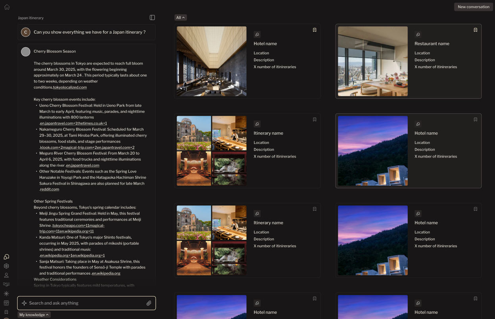
Each card only had a name, a place and a description. Asked for a trip to Japan, it suggested cherry blossom festivals from Reddit. Advisors needed the agency’s own hotel deals.
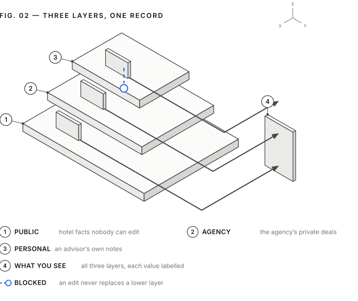
The key insight
Search was not the problem. Three kinds of data were mixed together.
What failedThe answers were wrong too often to trust.And some answers showed a commission the reader was not allowed to see.
What we foundThree kinds of data sat in the same folders.Public hotel facts that nobody at the agency can edit. The agency’s private deals.Each advisor’s own notes.
What I changedEvery record knows who is allowed to see it.Everything is private until someone shares it. So an answer can never show something the reader should not see.
How we measured itTime to a trusted answer.Every answer needs its sources, a date and a confidence level, or a clear “I don’t know”. And it must never show private data.
The results
What changed for the advisors, and for the business, after eight months.
The results · for advisors
What changed for advisors, measured with the agency over eight months.
Half
Time to build an itinerary
About 72 hours of searching and retyping, cut by at least half. This is the agency’s own estimate.
Reported by the agency
~2h / day
Admin time saved per advisor
We aimed for one hour. Most of the time came back from no longer chasing rate changes buried in email.
Reported by advisors, not measured
+15%
More commission on the same trips
Not by selling harder. Advisors chose between equally good hotels, knowing which one paid more that week.
Reported by the agency
The results · for the business
It had to work for advisors, and help the company grow.
Signed
A contract with our design partner
They connected their files and email before they signed. Agencies do not do that for a demo.
Signed usage contract
Sellable
A product another agency could buy
Not a one-off build. Each agency’s private data stays separate from every other agency’s.
Verify pipeline claim before presenting
Raising
The company went to investors with it
When my work ended, the system was in place, the product manager owned the roadmap, and the engineers were building on it.
Verify stage and framing
Four design challenges
The hardest problems we met along the way, and how I solved each one.
The four challenges
Four problems I had to solve.
Checking what comes inDocuments arrive in every format. A person has to confirm what Enable reads from them.
Moving between screensThe usual layout for tools like this did not fit the way advisors work.
Changing a recordWhen an advisor edits something, who is the change for?
Keeping details consistentA reviewer found three inconsistencies on one screen that we had missed.
Each one follows the same steps: what I tried first, what I learned, and where I landed.
Challenge 1 · checking what comes in
A document arrives, and a person confirms what Enable read from it.
1 a rate sheet arrives in the vault
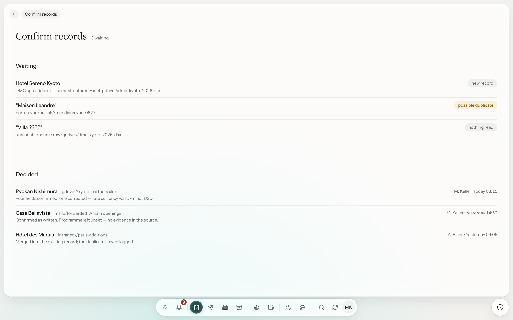
2 Enable suggests new records, each with its source file
Three new records are waiting. One file could not be read, so Enable does not guess. Nothing is used in an answer until a person confirms it.
Challenge 1 · first attempt
First, we let them check every field by hand.
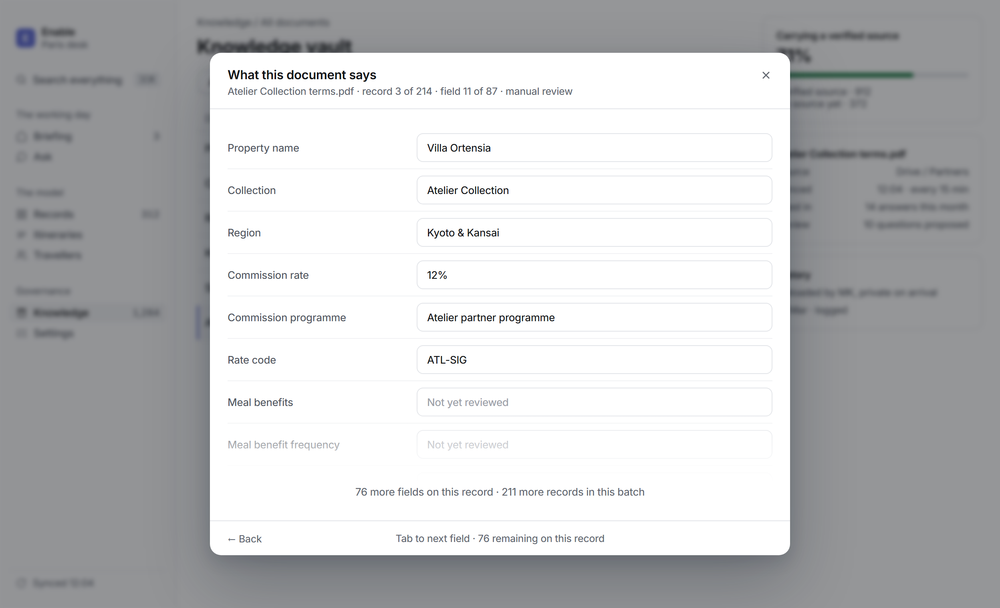
Field 11 of 87. Record 3 of 214. They asked for this, and it made sense: their business depends on the details being right.
Challenge 1 · what I learned
It worked, but nobody was ever going to finish it.
A review that long does not get done. And a skipped review is worse than none, because everyone thinks it happened.
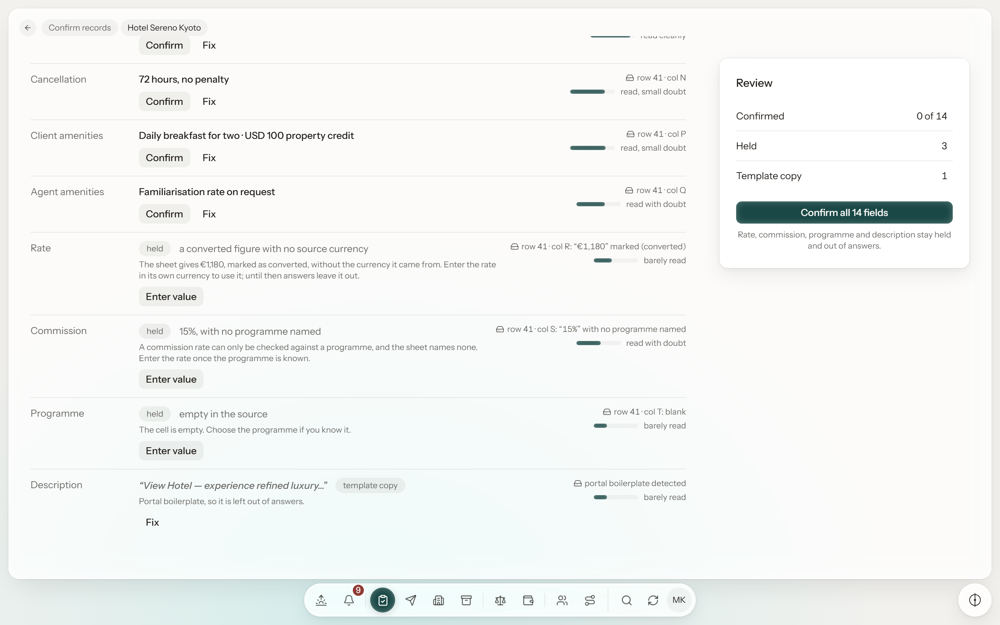
Challenge 1 · where I landed
Enable fills in each field and shows how sure it is. A person approves it.
Every field comes filled in, with the exact cell it came from, like row 41 · col N. The reviewer checks instead of typing.
Each field shows how sure Enable is, so the reviewer knows where to look.
When Enable cannot read something, it does not guess. A person has to fill it in.
Approving adds the reviewer’s name and the date. Every value can be traced back to a person.
Challenge 2 · first attempt
A menu on the left, like every tool in this industry.
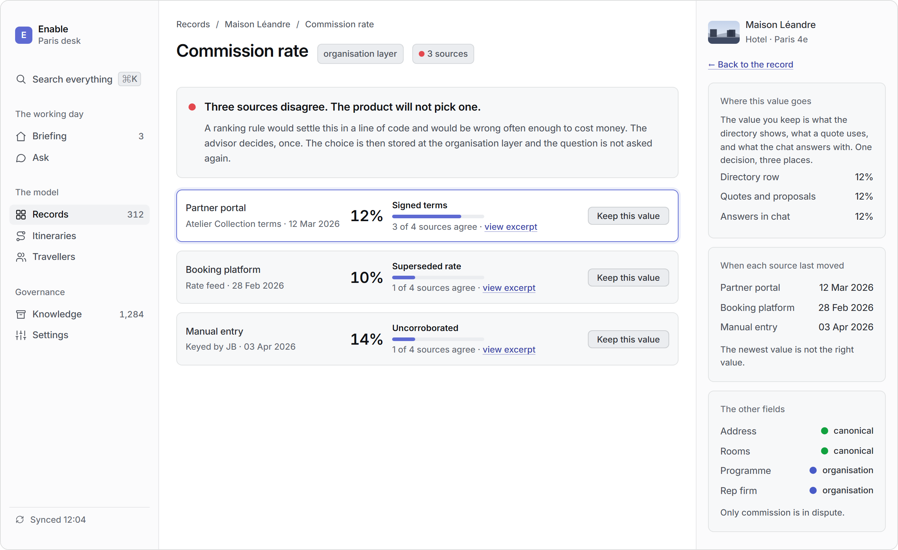
It worked. But it did not fit the way advisors move through their day.
Challenge 2 · where I landed
I moved the navigation to a bar at the bottom of the screen.
The left menu took about 230 pixels of width on every screen, including the busiest ones.
Advisors jump between a few places all day, the way they use apps on their phone.
Each place has one name, used everywhere. Every list works the same way, and Back always returns you to where you were.
The trade-off: the bar takes 70 pixels of height. If advisors get lost, my next step is to add a label under every icon.
Challenge 3 · the problem
The same edit can mean three different things.
An advisor corrects a rate. It could be a private note, an update for their team, or a change for the whole agency. The first version never asked which.
Challenge 3 · where I landed
Before you change a field, Enable asks who the change is for.
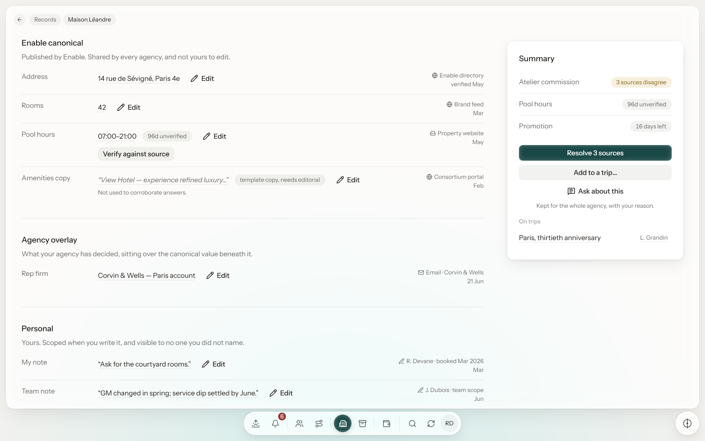
1 editing a hotel record
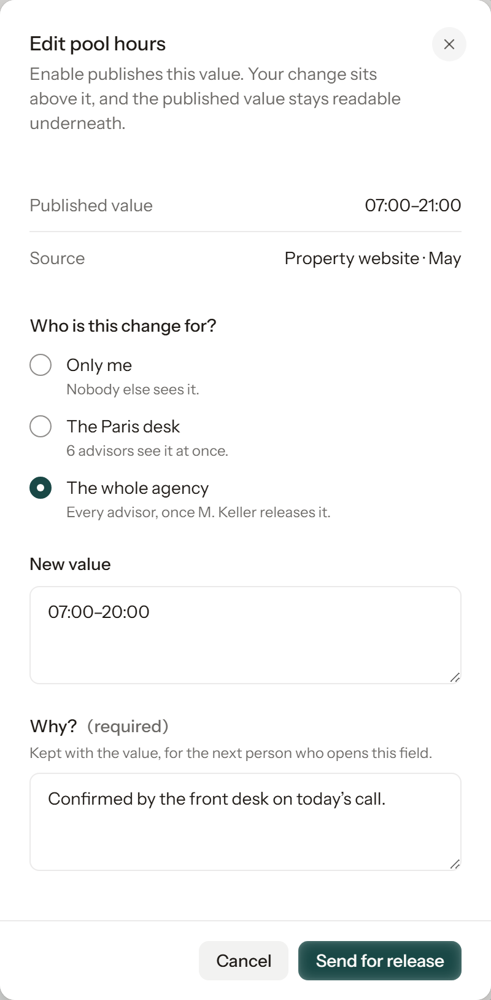
2 who the change is for comes first
The original value always stays visible under the change. A change for the whole agency waits for the agency owner to approve it. Advisors can suggest, but they cannot overrule the agency.
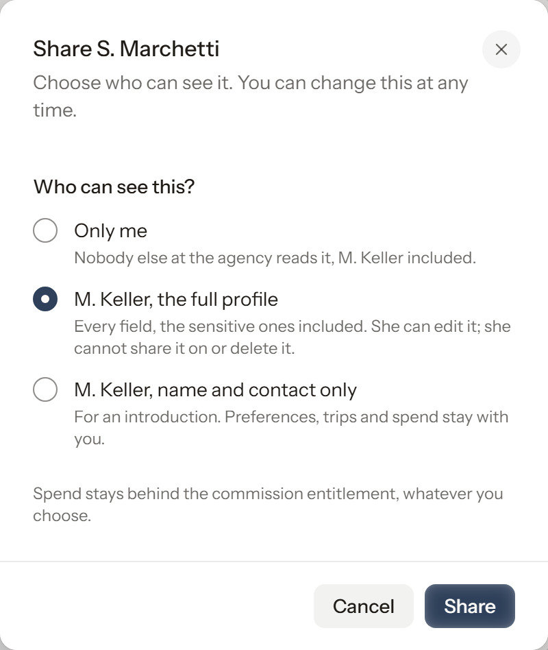
Challenge 3 · the same question for sharing
Who can change a record and who can see it follow the same rule.
Everything is private until you share it with a named person. You can undo it at any time.
You can share a full client profile, or only their name and contact details for an introduction.
Spending stays hidden from anyone who cannot see commissions. Trusting someone with a client is not the same as trusting them with the numbers.
In March, sharing was all or nothing. I wrote down what would make me change it. In April, the agency lead asked for almost exactly that.
Challenge 4 · what I learned
A reviewer found three inconsistencies on one screen.
Colours that did not match their legend. Two counts written in different ways. A selected row that did not look selected. We had seen that screen many times. Nothing was checking it.
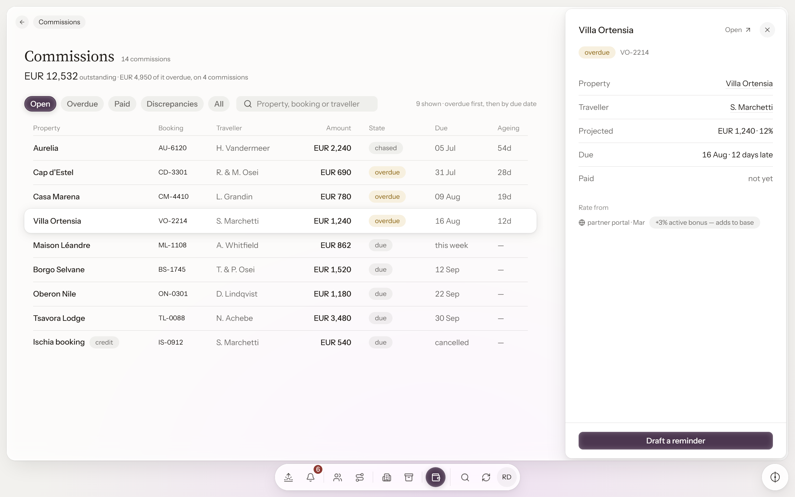
Challenge 4 · where I landed
Every detail that must stay consistent has a rule, and every rule has a check.
Colour only shows urgency. Amber means a decision is waiting. Red means something is blocked. Everything else is written in words.
Each thing has one name, used the same way on every screen.
A selected row lifts off the page, so you can see it is selected before you act.
312 automatic checks run across every screen, for both types of user, before each screenshot in this deck.
What comes next
What I would build next, and a last look at the results.
What I would do next
We never built the proposal itself.
A proposal template, so advisors stop building this document by hand.
A copy for the client, so the trip lives in one place instead of a PDF.
Notes during the trip, sent by the advisor inside it, not by email.
To close
Eight months. Two calls a week. A new version every week.
Half
Time to build an itinerary
~2h / day
Admin time saved per advisor
+15%
More commission on the same trips
The design partner signed. Other agencies could buy the product. The company went to investors with it.